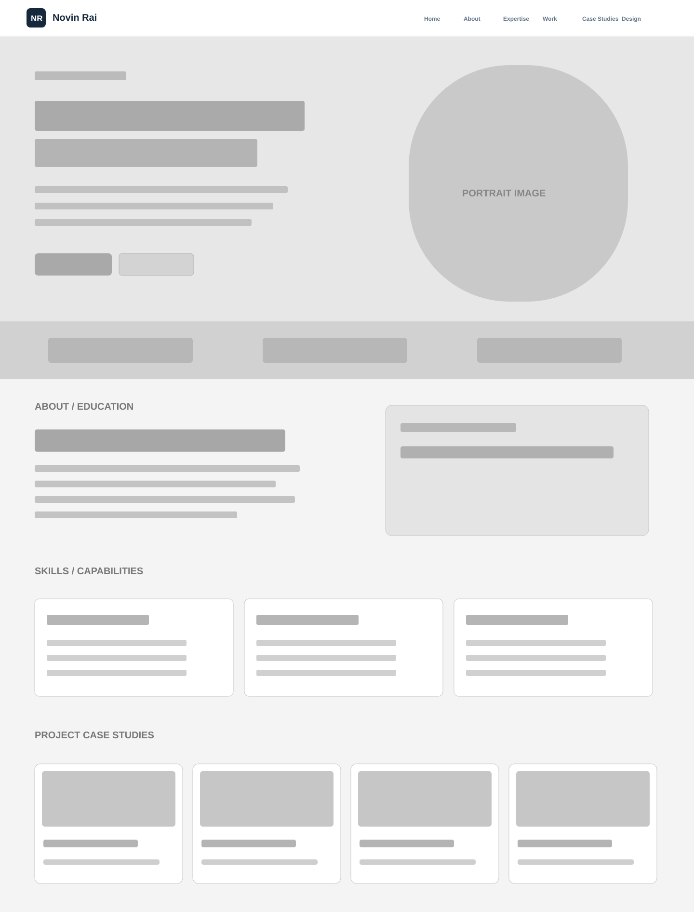
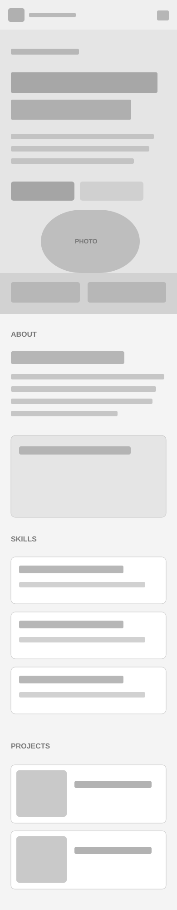
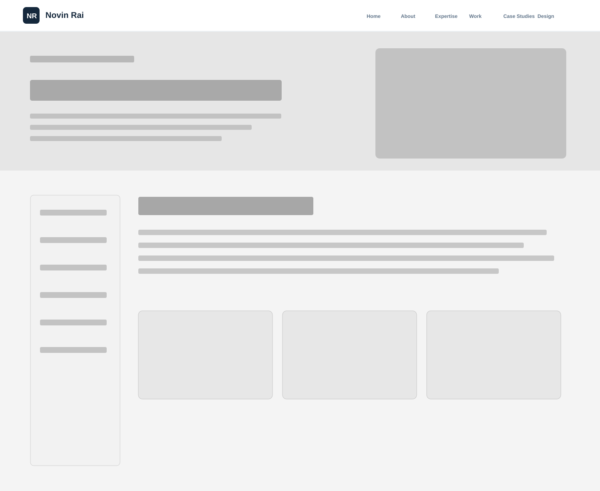
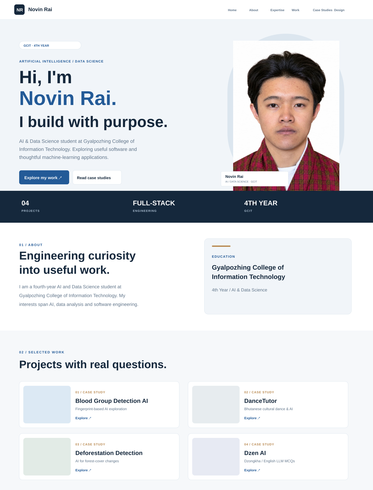
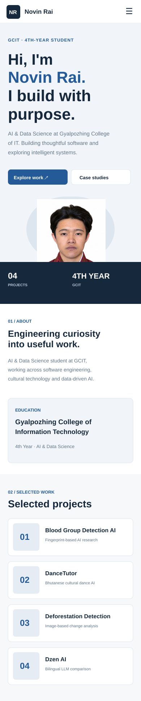
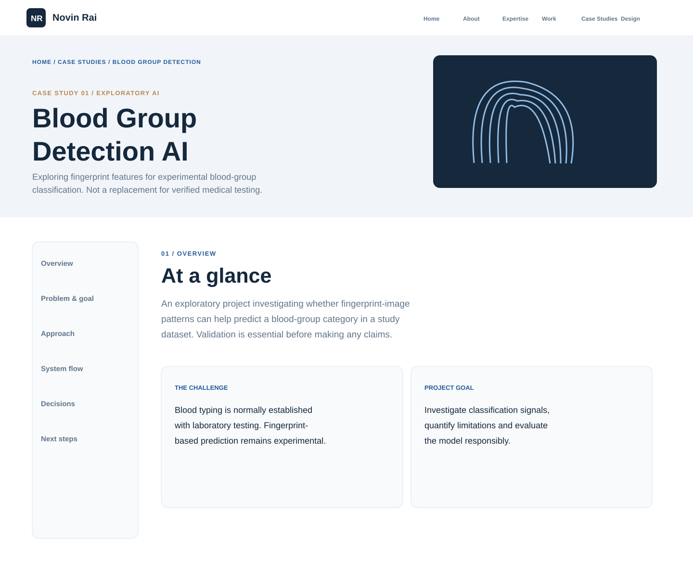

Low-fidelity
Homepage · Desktop
Wireframe exploring content hierarchy, section order and call-to-action placement.
UX / Visual design
An editable low-to-high fidelity design package: homepage and case-study boards at desktop and mobile sizes, ready to import into Figma.
js/site-config.js.Explore the boards
Choose a design stage. Every board is supplied as an editable vector SVG, not an image from the sample portfolio.

Wireframe exploring content hierarchy, section order and call-to-action placement.

Single-column wireframe for smaller screens and simplified navigation.

A content-first structure for research context, process, evidence and next steps.

Refined color, typography, imagery and project-card styling.

Mobile expression of the final visual system.

Polished detail layout designed to match the working case-study pages.
Design guidelines
Ink Navy #15283C · Professional Blue #235A97 · Slate #61758A · Warm Gold #B8884F · Soft White #F6F8FA.
Manrope for headings and labels, DM Sans for readable body copy, with system sans-serif fallbacks.
Responsive twelve-column-inspired content system, generous whitespace, accessible contrast, and dedicated case-study information architecture.
Requires connecting and sharing the design in a Figma account. A public URL has not been fabricated.